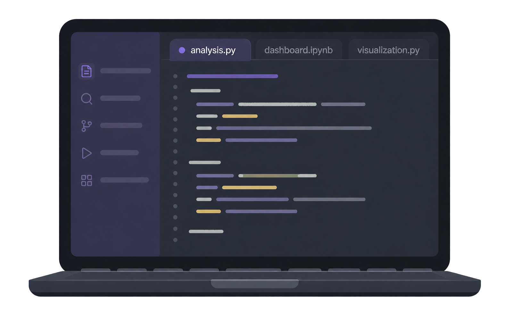

# Analista de datos
Los datos cuentan historias Yo las convierto en decisiones
Transformo información compleja en análisis, visualizaciones y soluciones claras que apoyan la toma de decisiones
Si te interesa saber más, puedes descubrir

# Analista de datos
Transformo información compleja en análisis, visualizaciones y soluciones claras que apoyan la toma de decisiones
Si te interesa saber más, puedes descubrir
